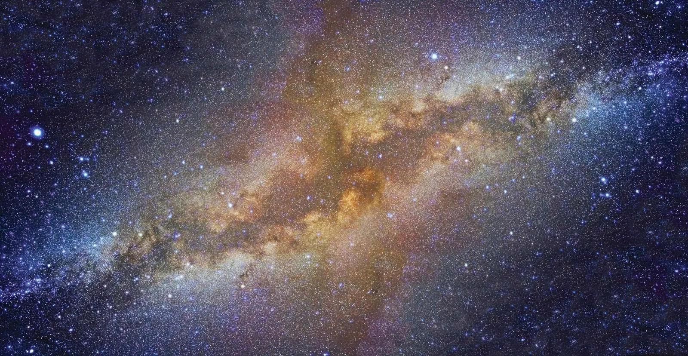

Milky Way Galaxy
Milky Way Galaxy , large spiral system consisting of several hundred billion stars, one of which is the Sun. It takes its name from the Milky Way, the irregular luminous band of stars and gas clouds that stretches across the sky as seen from Earth. Although Earth lies well within the Milky Way Galaxy (sometimes simply called the Galaxy), astronomers do not have as complete an understanding of its nature as they do of some external star systems. A thick layer of interstellar dust obscures much of the Galaxy from scrutiny by optical telescopes, and astronomers can determine its large-scale structure only with the aid of radio and infrared telescopes, which can detect the forms of radiation that penetrate the obscuring matter.

This article discusses the structure, properties, and component parts of the Milky Way Galaxy. For a full-length discussion of the cosmic universe of which the Galaxy is only a small part, see cosmology. For the star system within the Galaxy that is the home of Earth, see solar system.
How was our galaxy formed?
Dark Matter! For galaxy creation to be successful, we first need a mysterious substance known as dark matter. Astronomers don’t know what dark matter is made of exactly but they do know it’s invisible and takes up most of the matter in the Universe. Dark matter, which will be shaped as a huge sphere around your galaxy and also sprinkled throughout your galaxy, seems to trigger the growth of clouds of gas and dust. Galaxy creators would need to shape the dark matter into a super-galactic-sized sphere. This dark matter will then weakly attract hydrogen gas and trigger the birth of the first stars. Be sure to stand back, as that first generation of stars can go out with a bang, with many supernova explosions occurring.
Gas! What are the other materials that go into making a galaxy? As mentioned above, clouds of gas and dust are believed to have eventually collapsed under their own gravitational pull to form the Milky Way’s first stars. So we need enough hydrogen gas to create a few billion stars.
The Milky Way is shaped like a giant fried egg. It is about a hundred times wider than it is thick, and it bulges in the middle. The central lump is called the bulge and the rest of the galaxy outside the bulge is called the disk.
As you know, we are inside the Milky Way Galaxy. So when you look at the thin milky-looking band stretching across the sky at night, what do you think you are actually looking at?
The thin band of light that you see is actually the stars in the Sagittarius arm as you look inwards towards the centre of the galaxy. There are so many stars densely packed together that you cannot make out individual stars with your eyes. There before you just see a haze of light. Above and below the plane of the disk there are very few stars.
If you look closely at the image of the Milky Way above, you can see several round fuzzy blobs dotted about above and below the disk. These are called globular clusters and are vast collections of hundreds of thousands of ancient stars tightly packed together by gravity. The Milky Way has an estimated 160 globular clusters. The oldest stars in the galaxy are found in these globular clusters, some are almost as old as the Universe itself.
{kind=link}